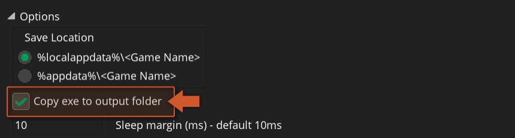
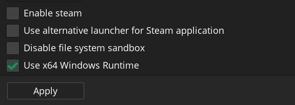
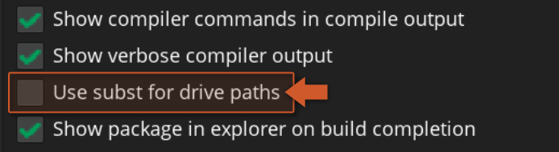
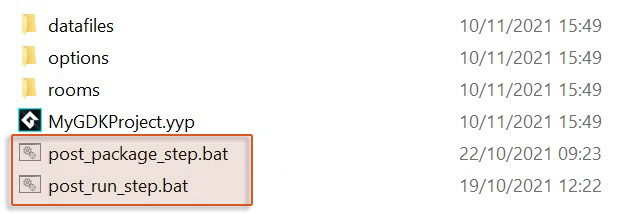
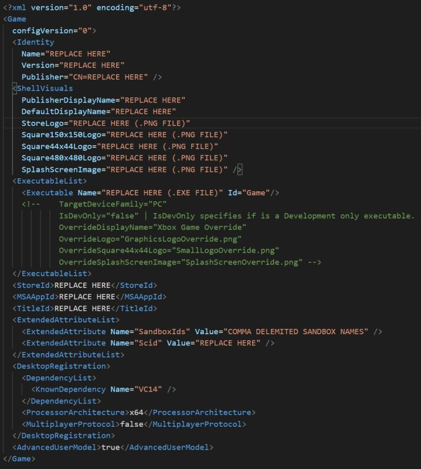
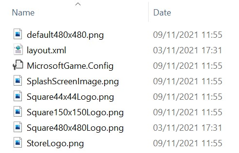

Quick Start Guide
You will initially need to set up your project for the GDK Extension to work properly. This guide covers all aspects of your project that you will need to configure.
Project Setup
In order to build your project using the extension you need to import it and make some changes to your project:
- Import the local package ( .yymps ) provided with the public release version.
- Make sure to enable the "Copy exe to output folder" setting. To enable this go into Game Options → Windows → General and enable Copy exe to output folder:

These steps are required only for older versions of GameMaker:
For GameMaker versions prior to 2022.8 : Make sure to use the 64-bit Windows runtime. To change this go into Game Options → Windows → General and enable " Use x64 Windows Runtime ".

For GameMaker 2022.3 (or previous) : Also make sure you disable the subst from within the Preferences → General Settings → Compiling menu, otherwise this extension will not work:

- For GameMaker 2022.2 (or previous) : The extension comes with two .bat files:
post_package_step.batandpost_run_step.bat(placed inside the extension's folder). These files need to be moved into your project's root folder, which is the same directory as your project's .yyp file:
After finishing this we'll set up the config file required for the Microsoft Store.
Sandbox Get/Set
When using Xbox Live features, you might need to change your PC sandboxes (see official documentation) so you can test those same features. For this purpose, you can run the GDK Command Line (under Start → All Apps → Microsoft GDK → Desktop VS 2022 Gaming Command Prompt) and use one of the following commands:
XblPCSandbox /get(returns the current sandbox, default is RETAIL)XblPCSandbox <sandbox>(changes the sandbox, where<sandbox>refers to your sandbox name)XblPCSandbox RETAIL(sets the sandbox back to RETAIL)
Note
Sandbox names are case sensitive.
Config File
To build and run your project using the GDK Extension, it's necessary to set up and include a MicrosoftGame.Config file:
- This config file can be created using Microsoft's MicrosoftGame.config Editor tool (for more information refer to its documentation page) or can be copied from the demo project and edited manually.

Note
The ExecutableList/Executable/Name property should be set to the value in Game Options → Windows → Executable Name.
- Add the
MicrosoftGame.Configfile to the Included Files of your project. - Depending on the image file names specified in the
ShellVisualstag you will need to add those to the Included Files as well.

Upon finishing this setup and following the Project Setup section above, you should be ready to run and test your project.
Shell Localization Guide
This feature allows you to define the title's Shell presence. For example, Images and Names. Used during registration to surface the title in the Shell. In order to use this you need to make some modifications to both the MicrosoftGame.Config file and your project:
- In the
MicrosoftGame.Configfile, the following needs to be changed:- Change the value of
DefaultDisplayNameinShellVisualsto"ms-resource:ApplicationDisplayName" - Change the value of
DescriptioninShellVisualsto"ms-resource:ApplicationDescription" - Add a section which declares which languages they want to support using standard language\region codes (this should be in the
Gamesection), i.e.:
- Change the value of
<Resources>
<Resource Language="en-us" />
<Resource Language="en-gb" />
<Resource Language="de-de" />
</Resources>
-
In your project you then need to add some folders to included files:
- In the root of included files (i.e.:
datafiles) aGDKExtensionStringsfolder - Inside the
GDKExtensionStringsfolder one subfolder for each supported language, i.e.en-usfor American English andde-defor German, so for the above list of languages the directory structure would be:
GDKExtensionStrings\en-us GDKExtensionStrings\en-gb GDKExtensionStrings\de-de- Inside the base
GDKExtensionStringsfolder an XML file namedresources.reswwhich will contain the fallback language info and should look like the following (where the values should be replaced with the required defaults):
<?xml version="1.0" encoding="utf-8"?> <root> <data name="ApplicationDescription"> <value>Default App Description Here</value> </data> <data name="ApplicationDisplayName"> <value>Default Display Name Here</value> </data> </root>- Inside each of the language-specific folders another
resources.reswfile with the appropriate values for that language.
- In the root of included files (i.e.:
Cross-platform exports
If you want to export your game to both Xbox and targets supported by the GDK extension then you can do a check on the os_type variable and use functionality based on the value in this variable:
switch(os_type) {
case os_windows:
// Use extension functionality
break;
case os_gdk:
case os_xboxseriesxs:
// Use Xbox runner functionality
break;
default:
throw "[ERROR] objSaveGroup, unsupported platform";
}
os_windows, a function of the GDK extension is called, otherwise a built-in function of the Xbox runner is called.
Loading and Saving
| Activity | Xbox runner function | GDK function |
|---|---|---|
| Save single file | buffer_save_async | gdk_save_buffer |
| Load single file | buffer_load_async | gdk_load_buffer |
| Start multiple async | buffer_async_group_begin | gdk_save_group_begin |
| End multiple async | buffer_async_group_end | gdk_save_group_end |
Note
GDK functions don't have a separate *_async function.
The Xbox runner always starts the file path with
"root/", the GDK extension doesn't do this automatically. To load and save files so that they can be read on both platforms you should always add the"root/"part to paths on the GDK extension only (not on Xbox).
// Single file
gdk_save_buffer(buff, "root/savegames/player_save.sav", 0, 16384); // GDK extension
buffer_save_async(buff, "savegames/player_save.sav", 0, 16384); // Xbox runner
// Save group
gdk_save_group_begin("root/savegames");
save1 = gdk_save_buffer(buff1, "player_save1.sav", 0, 16384); // GDK Extension
save2 = gdk_save_buffer(buff2, "player_save2.sav", 0, 16384);
save3 = gdk_save_buffer(buff3, "player_save3.sav", 0, 16384);
gdk_save_group_end();
buffer_async_group_begin("savegames");
save1 = buffer_save_async(buff1, "player_save1.sav", 0, 16384); // Xbox runner
save2 = buffer_save_async(buff2, "player_save2.sav", 0, 16384);
save3 = buffer_save_async(buff3, "player_save3.sav", 0, 16384);
buffer_async_group_end();